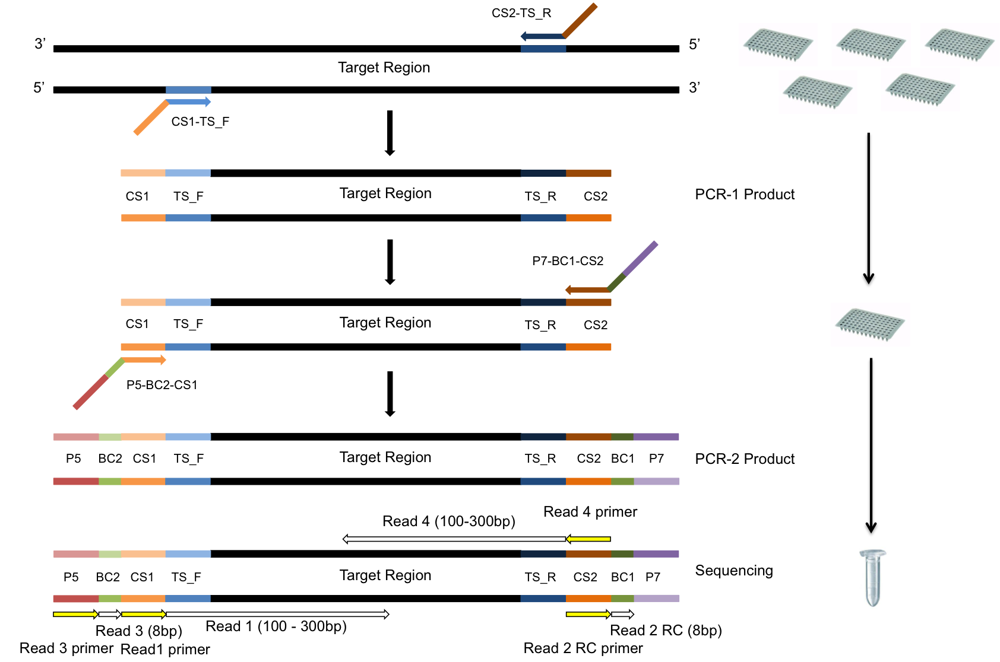

What is dbcAmplicons.
dbcAmplicons is python software tool for the analysis of Illumina sequence data generated from double barcoded amplicons generated through PCR reactions. Polymerase chain reaction (PCR) amplicon sequencing is a common and important tool used to query genetic variation within a single sample and structure in ecological communities. Applications range from determining the taxon community structure in microbial, fungal and other community types to determining mutation frequencies in a set of genes across many individuals. Common practice is to add a barcoded DNA sequencing adapter to the template specific primer, generating a PCR product that can be sequenced on an Illumina machine. As sequencing throughput continuing to increase the need for flexible methods that maximize the sequencing capacity are needed. For amplicons this implies sequencing more individual and/or amplicons in the same sequencing run.
An amplicon is an amplified molecule, usually generated via PCR, of a single type and is an assumed to be an exact replicate of the original DNA template. A pair of PCR primers is designed to uniquely target a particular region of DNA. In order to sequence a DNA fragment using the Illumina platform, certain sequences are necessary in order for the fragment to bind to the Illumina flowcell, amplify and then initiate sequencing. Commonly, paired target specific PCR primers are designed to include the extra oligonucleotides necessary for sequencing (~60bp to each primer). PCR amplicon sequencing in this manner then requires the researcher to purchase a unique pair of ~80bp primer for every target region and sample (including barcodes) with the experiment. A technique that is neither modular nor cost effective.
Increasing sequencing capacity offers an opportunity to sequence many loci across hundreds or even thousands of samples at significant depth of coverage. Techniques are needed however to both multiplex amplicons and samples in the same sequencing reaction in a cost effective manner.
Installation of dbcAmplicons
dbcAmplicons is primarily a python application, but also contains some C code (barcode and primer matching) and R code (for amplicon smaple genotyping). Most linux (Apple Mac OS) environments have the requirements for dbcAmplicons. There are also a few external application dependancies that should first be installed.
you can clone the git repository with the following commands:
git clone https://github.com/msettles/dbcAmplicons.git
cd dbcAmplicons
python setup.py install
Dependencies
For preprocessing
If you want to continue with your current python distribution use the following commands (NOTE: requires Python (>= 2.6 or >= 3.3), NumPy (>= 1.6.1), SciPy (>= 0.9):
pip install -U numpy scipy scikit-learn argparse
Authors and Contributors
You can @mention a GitHub username to generate a link to their profile. The resulting <a> element will link to the contributor's GitHub Profile. For example: In 2007, Chris Wanstrath (@defunkt), PJ Hyett (@pjhyett), and Tom Preston-Werner (@mojombo) founded GitHub.
Support or Contact
Having trouble with Pages? Check out the documentation at http://help.github.com/pages or contact support@github.com and we’ll help you sort it out.